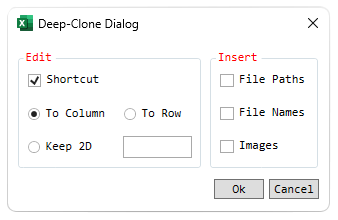
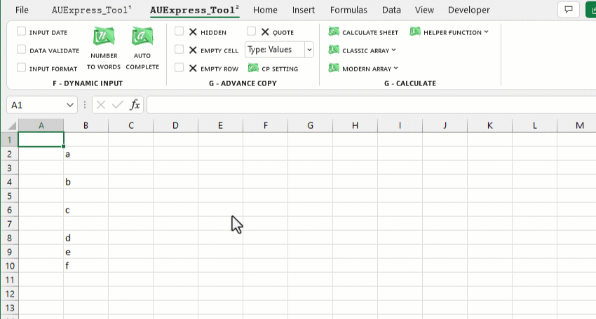
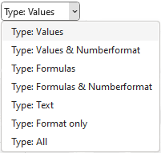

⚊ Bộ tính năng này được bật hoặc tắt bằng cách tích vào Modified.
⚊ Cơ chế thực hiện gồm 3 bước:
1. Chọn một trong các thuộc tính nâng cao: Hidden (bỏ qua dòng ẩn), Empty Cell (bỏ qua ô trống) hoặc Empty Row (bỏ qua dòng trống) hoặc Quote (bỏ double quote)
2. Chọn vùng cần copy.
3. Sử dụng tổ hợp phím Ctrl+Shift+C để copy và Ctrl+V để paste.
VD: Tính năng Copy bỏ qua các ô Trống.
⚊ Một số tùy chọn nâng cao đi kèm:
Related function
NUMBERTOWORDS Hàm đọc số thành chữ (phiên bản Anh-Việt).
GROUPBY Phân nhóm bảng dữ liệu dựa trên một mảng dữ liệu chỉ định, hỗ trợ tính toán tùy chỉnh.
XGROUP Hàm mở rộng của GROUP. (hỗ trợ các hàm nâng cao).
FLOOKUP (feature) Nhập liệu nâng cao, lọc-xuất nhiều dữ liệu đồng thời (Ribbon).
Return to Home